Source: Zotero note; match: first-page title.Open item in Zotero
TactileStep
Issues beforehand: harsh landings, edge contacts, unstable stance contacts
Method: real pressure insole for real tactile sensing
compact features: normal force, contact area, center of pressure
prior sim2real:
[26] Z.-H. Yin, B. Huang, Y. Qin, Q. Chen, and X. Wang. Rotating without seeing: Towards in-hand dexterity through touch. arXiv preprint arXiv:2303.10880, 2023.
[27] L. Yang, B. Huang, Q. Li, Y.-Y. Tsai, W. W. Lee, C. Song, and J. Pan. Tacgnn: Learning tactile-based in-hand manipulation with a blind robot using hierarchical graph neural network. IEEE Robotics and Automation Letters, 8(6):3605–3612, 2023.
[28] J. Yin, H. Qi, J. Malik, J. Pikul, M. Yim, and T. Hellebrekers. Learning in-hand translation using tactile skin with shear and normal force sensing. In 2025 IEEE International Conference on Robotics and Automation (ICRA), pages 5850–5856. IEEE, 2025.
[29] C. Lin, Y. R. Song, B. Huo, M. Yu, Y. Wang, S. Liu, Y. Yang, W. Yu, T. Zhang, J. Tan, et al. Locotouch: Learning dynamic quadrupedal transport with tactile sensing. arXiv preprint arXiv:2505.23175, 2025.
[30] S. Wang, M. Lambeta, P.-W. Chou, and R. Calandra. Tacto: A fast, flexible, and open-source simulator for high-resolution vision-based tactile sensors. IEEE Robotics and Automation Letters, 7(2):3930–3937, 2022.
[31] Z. Si and W. Yuan. Taxim: An example-based simulation model for gelsight tactile sensors. IEEE Robotics and Automation Letters, 7(2):2361–2368, 2022.
Framework
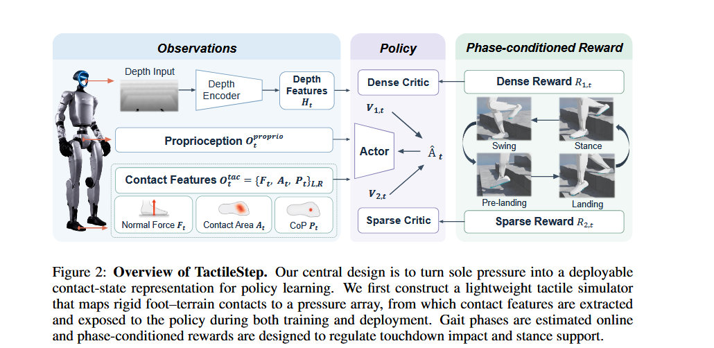
formulation: POMDP + PPO
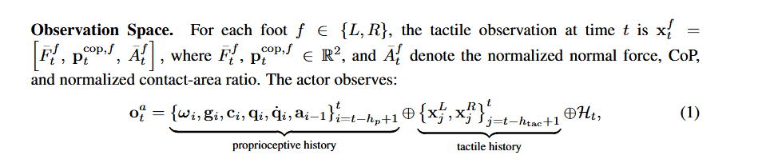
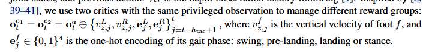
Reward Functions:
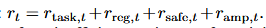
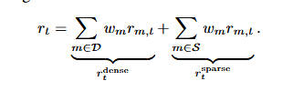
（Details at B.3)
Simulation:
Force Distribution - 60 Taxels(tactile pixel) on the sole
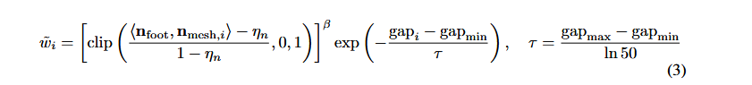
Spatial Diffusion - smooth in-betweening
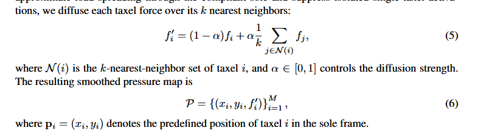
Feature extraction
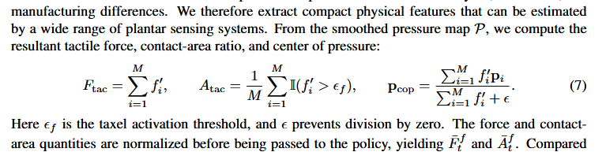
Sim2Real Alignment
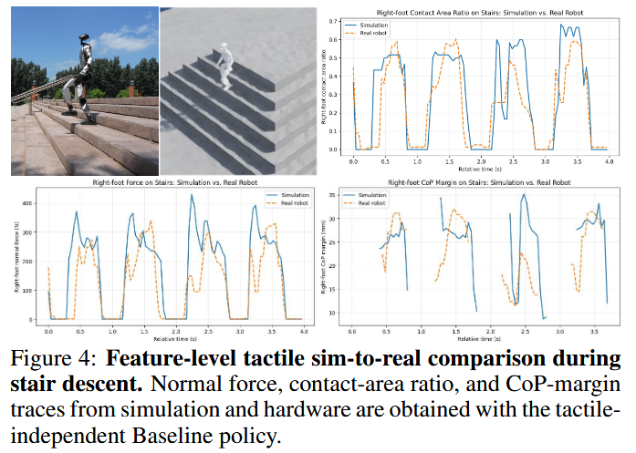
same features as in simulation + hardware calibration with MLP
Phase-aware - Swing Prelanding Landing Stance
In general:
Soft-landing
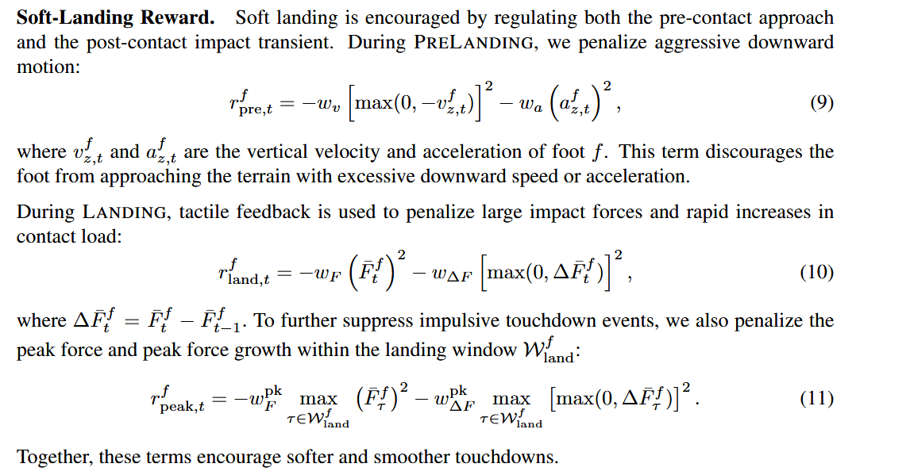
Support-Stability
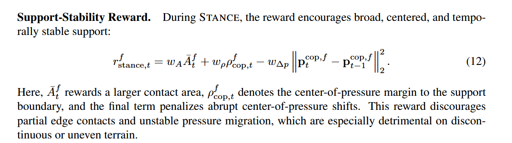